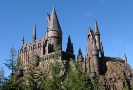
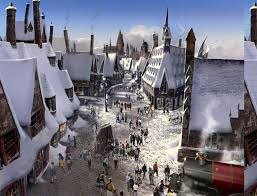
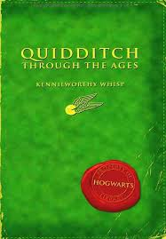
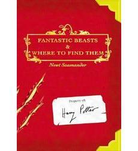
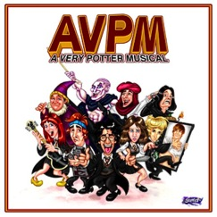
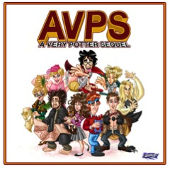

The Wizarding World of Harry Potter
Opened on June 18, 2010 at Universal Studios Florida, fans can now enter the world of Harry Potter. The theme park includes Hogsmeade, Olivander's Wand Shop, and all the Butterbeer one can drink. The major ride is Harry Potter and the Forbidden Journey, which consists of a interactive line that loops through Hogwarts and ends with a thrilling roller coaster. Expansions are under construction as well as another theme park at Universals Hollywood and Universals Japan.
 
Other Books in the Magical World
Fantastic Beasts and Where to Find Them, and Quidditch Through the Ages are books mentioned in the Harry Potter series. JK Rowling created these two companion books for Charity. Now Fantastic Beasts is turning into a movie with JK Rowling writing the screenplay. There is still hope that she will write another Harry Potter series.
 
Harry Potter, The Musical
University of Michigan has been known throughout history as being a disgrace to the world "University". However, they have one redeeming quality, and that is Michigan students created Harry Potter Musicals. The first was produced in 2009. The performance was recorded, and put on Youtube. The Musical was a hit, and they created a sequel the following year. In 2013, they created one a third musical that was performed without props. The actor who portrays Harry is Darren Criss who is now famous for being on Glee.
 